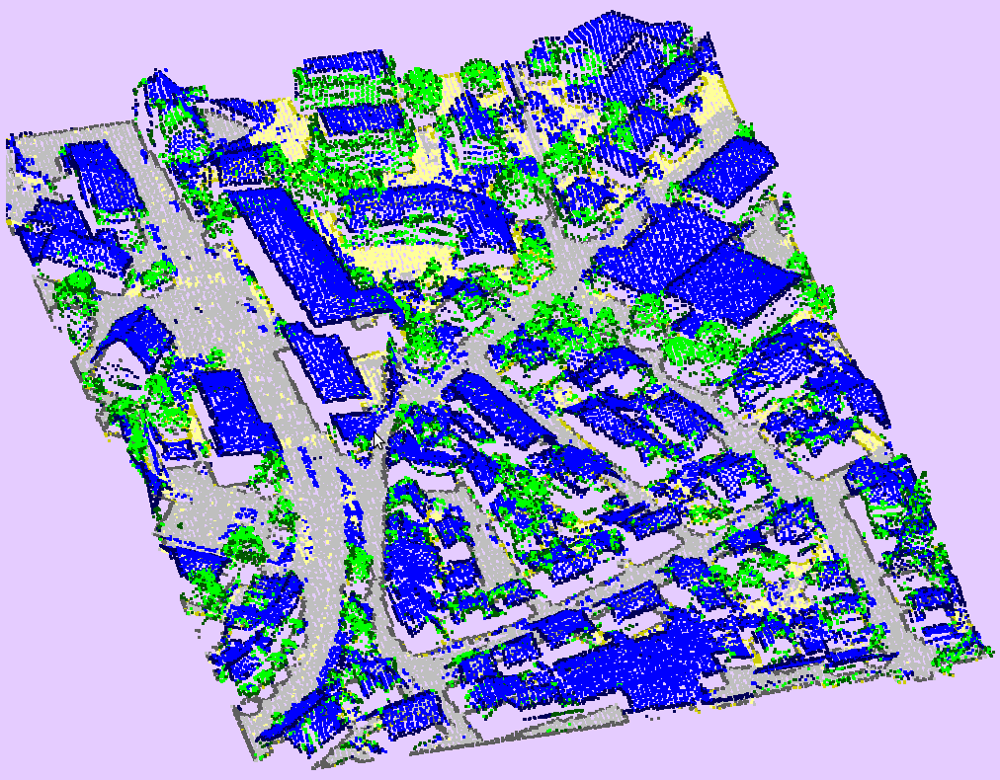
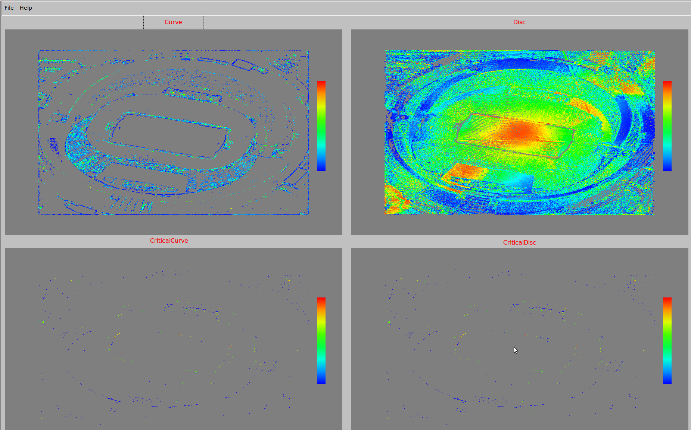

Gallery
Video archive of our project descriptions:(Nov 2014) (Nov 2015)
Video gallery of our projects:
Visualization of ARGO datasets:
(Nov 2015) Slicing | Topological methods
Visualization of point cloud from airborne LiDAR:
(June 2015) RAVE-PC (Remotely Accessible Visualizer & Explorer of Point Clouds): How to use | How to connect thinlinc using html | How to connect thinlinc using thinlinc client
Image gallery of our projects:
Semantic classification of LiDAR point clouds to buildings, vegetation, and roads for Vaihingen benchmark dataset:

{kind=link}
{kind=link}
{kind=link}
{kind=link}
(by Beena Kumari)
Scatter plot and parallel coordinates representations of security analytics data (using d3.js):
{kind=link}
{kind=link}
Georeferenced network in security analytics (using d3.js):
{kind=link}
Treemap, sunburst, and radial layout for hierarchical data (using d3.js)
{kind=link}
{kind=link}
{kind=link}
More at http://sec-viz.appspot.com
(by Amit Tomar, Beena Kumari, Shivam Agarwal)
Implementation of VAT (Visual Assessment of Clustering Tendency [Bezdek,Hathaway 2002]) as a seriation algorithm:
{kind=link}
{kind=link}
(by Amit Tomar)
Parallel sets-like representation of collaboration networks for a series of similarity matrices and multilevel representation of a single similarity matrix:
{kind=link}
{kind=link}
(by Saima Parveen)
Reduction of point cloud data (Lidar data) using structural feature classification and extraction, with color map indicating the feature strength:

{kind=link}
{kind=link}
{kind=link}
(by Beena Kumari)
Remote visualization using server-client architecture enabled by ThinLinc and CUDA:
{kind=link}
(by Avijit Ashe, Beena Kumari)
Ocean visualization using VAPOR software:
{kind=link}
(by Subarna Sinha)
MPR (Multiplanar Reconstruction) for CT scan data:
{kind=link}
(by Srinivas Vaidya)
© 2015 Jaya Sreevalsan-Nair
Template design by Andreas
Viklund / Best hosted at www.svenskadomaner.se